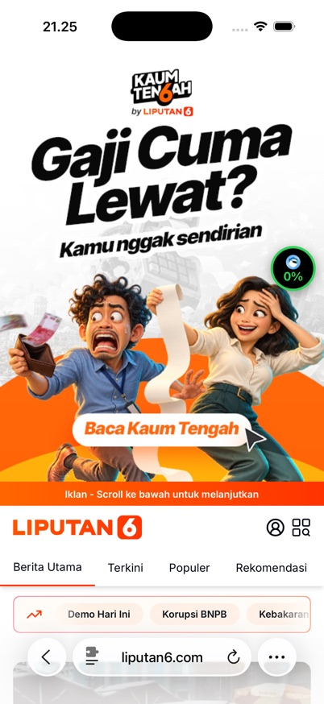

popular-liputan6
What the detector saw, drawn as a page. Not the real site: the corpus keeps only this snapshot.
Berita Terkini, Kabar Terbaru Hari Ini Indonesia dan Dunia - Liputan6.com
Berita Terkini, Kabar Terbaru Hari Ini Indonesia dan Dunia - Liputan6.com Iklan - Scroll ke bawah untuk melanjutkan Masuk Berita Utama Terkini Populer Rekomendasi Menu Berita Utama Cek Fakta Terkini Terpopuler Rekomendasi News Bisnis ShowBiz Bola Lifestyle Kesehatan Tekno Otomotif Enam Plus Saham Crypto TV Foto Regional Global Hot On Off Islami Citizen6 Opini Feeds Otosia Spotlight English Disabilitas Berita Health Sport Kontak Kebijakan Privasi Korupsi BNPB Rupiah Kebakaran Hutan Kaum Tengah Prabowo Subianto Danantara Pasang Syarat bagi Investor Data Center Skala Besar 2026-10-22 14:00:55 Ada 12 Ribu Lowongan Kerja di DKI, Bisa Daftar Online dan Offline 2026-10-22 13:50:48 Kronologi Perampokan Toko Emas, Pelaku Acungkan Celurit 2026-10-22 13:50:15 Pesawat Tempur TNI Mendarat di Tol Probolinggo 2026-10-22 13:09:16 Susul Prancis, Ribuan Pelajar dan Guru Demo di Yunani 2026-10-22 12:30:59 Kecelakaan Mobilio Tabrak Pikap di Rasuna Said, 1 Orang Tewas 2026-10-22 12:15:32 Masyarakat Tetap Belanja Meski Biaya Hidup Meroket 2026-10-22 12:15:10 KMP Batumandi Tenggelam di Merak, Tim Salvage Diterjunkan 2026-10-22 12:30:25 Alasan KPK Belum Cekal Nusron Wahid ke Luar Negeri 2026-10-22 12:27:07 SMRC: Dedi Mulyadi Paling Banyak Dipilih, Tapi Belum Tentu Maju Capres [number]:00:52 Deretan Janji Gubernur Kaltim: Atasi Kebakaran Hutan hingga Pecat Ajudan Arogan 2026-10-22 11:29:16 Advertisement Terpopuler Alasan Bareskrim Belum Tetapkan Tersangka Kasus Beras Fortifikasi Peristiwa DPR
image: Live Streaming Bannerimage: Liputan6 Logoimage: Danantara Pasang Syarat bagi Investor Data Center Skala Besarimage: Ada 12 Ribu Lowongan Kerja di DKI, Bisa Daftar Online dan Offlineimage: Kronologi Perampokan Toko Emas, Pelaku Acungkan Celuritimage: Pesawat Tempur TNI Mendarat di Tol Probolinggoimage: Susul Prancis, Ribuan Pelajar dan Guru Demo di Yunaniimage: Kecelakaan Mobilio Tabrak Pikap di Rasuna Said, 1 Orang Tewasimage: Masyarakat Tetap Belanja Meski Biaya Hidup Meroketimage: KMP Batumandi Tenggelam di Merak, Tim Salvage Diterjunkan| Type | normal (legit) |
|---|---|
| Source | real page · held back (never used for tuning) |
| Should get | < 30 % · not scam, show nothing |
| Got (Test 2a) | L1–2: 0 · final: 0 (normal) · ✅ left alone |
| Why | no signal |
| Live (Test 2b) | ad interstitial; 0% badge sent to server: none · push: — |
| Tags | popular holdout |
| Where it comes from | public page, static GET capture 2026-10-22. Short excerpt only (text up to 1500 chars, up to 10 image alts of 80 chars) kept for measurement; no licence granted by the site, limited quotation |
| Note | static HTML has 2 iframe(s); form content inside them is not captured |
| File | ai/eval/data/legit/real.json, line 1710 |
Safari, live

Raw sample (JSON)
{
"id": "popular-liputan6",
"label": "legit",
"tags": [
"popular",
"holdout"
],
"synthetic": false,
"redacted": true,
"source": "public page, static GET capture 2026-10-22. Short excerpt only (text up to 1500 chars, up to 10 image alts of 80 chars) kept for measurement; no licence granted by the site, limited quotation",
"collectedAt": "2026-10-22T07:18:49.569Z",
"notes": "static HTML has 2 iframe(s); form content inside them is not captured",
"snapshot": {
"url": "https://www.liputan6.com/",
"domain": "liputan6.com",
"title": "Berita Terkini, Kabar Terbaru Hari Ini Indonesia dan Dunia - Liputan6.com",
"lang": "id",
"text": "Berita Terkini, Kabar Terbaru Hari Ini Indonesia dan Dunia - Liputan6.com Iklan - Scroll ke bawah untuk melanjutkan Masuk Berita Utama Terkini Populer Rekomendasi Menu Berita Utama Cek Fakta Terkini Terpopuler Rekomendasi News Bisnis ShowBiz Bola Lifestyle Kesehatan Tekno Otomotif Enam Plus Saham Crypto TV Foto Regional Global Hot On Off Islami Citizen6 Opini Feeds Otosia Spotlight English Disabilitas Berita Health Sport Kontak Kebijakan Privasi Korupsi BNPB Rupiah Kebakaran Hutan Kaum Tengah Prabowo Subianto Danantara Pasang Syarat bagi Investor Data Center Skala Besar 2026-10-22 14:00:55 Ada 12 Ribu Lowongan Kerja di DKI, Bisa Daftar Online dan Offline 2026-10-22 13:50:48 Kronologi Perampokan Toko Emas, Pelaku Acungkan Celurit 2026-10-22 13:50:15 Pesawat Tempur TNI Mendarat di Tol Probolinggo 2026-10-22 13:09:16 Susul Prancis, Ribuan Pelajar dan Guru Demo di Yunani 2026-10-22 12:30:59 Kecelakaan Mobilio Tabrak Pikap di Rasuna Said, 1 Orang Tewas 2026-10-22 12:15:32 Masyarakat Tetap Belanja Meski Biaya Hidup Meroket 2026-10-22 12:15:10 KMP Batumandi Tenggelam di Merak, Tim Salvage Diterjunkan 2026-10-22 12:30:25 Alasan KPK Belum Cekal Nusron Wahid ke Luar Negeri 2026-10-22 12:27:07 SMRC: Dedi Mulyadi Paling Banyak Dipilih, Tapi Belum Tentu Maju Capres [number]:00:52 Deretan Janji Gubernur Kaltim: Atasi Kebakaran Hutan hingga Pecat Ajudan Arogan 2026-10-22 11:29:16 Advertisement Terpopuler Alasan Bareskrim Belum Tetapkan Tersangka Kasus Beras Fortifikasi Peristiwa DPR",
"forms": [
{
"action": "https://www.liputan6.com/search",
"fields": [
{
"type": "text",
"name": "q",
"id": "q",
"label": null,
"placeholder": "Mau cari berita apa?",
"autocomplete": null
}
]
}
],
"imageAlts": [
"Live Streaming Banner",
"Liputan6 Logo",
"Danantara Pasang Syarat bagi Investor Data Center Skala Besar",
"Ada 12 Ribu Lowongan Kerja di DKI, Bisa Daftar Online dan Offline",
"Kronologi Perampokan Toko Emas, Pelaku Acungkan Celurit",
"Pesawat Tempur TNI Mendarat di Tol Probolinggo",
"Susul Prancis, Ribuan Pelajar dan Guru Demo di Yunani",
"Kecelakaan Mobilio Tabrak Pikap di Rasuna Said, 1 Orang Tewas",
"Masyarakat Tetap Belanja Meski Biaya Hidup Meroket",
"KMP Batumandi Tenggelam di Merak, Tim Salvage Diterjunkan"
],
"capturedAt": "2026-10-22T07:18:49.567Z"
},
"meta": {
"iframes": [
"${a}",
"https://www.vidio.com/embed/9710885-highlights-bali-united-tumbangkan-ps-freeport-aksi-koprol-anak-anak-papua-kiper-doa-doa-bola?autoplay=REDACTED&player_only=REDACTED&live_chat=REDACTED&mute=REDACTED&enable_websocket=REDACTED&sticky=REDACTED"
],
"bytes": 346210
}
}